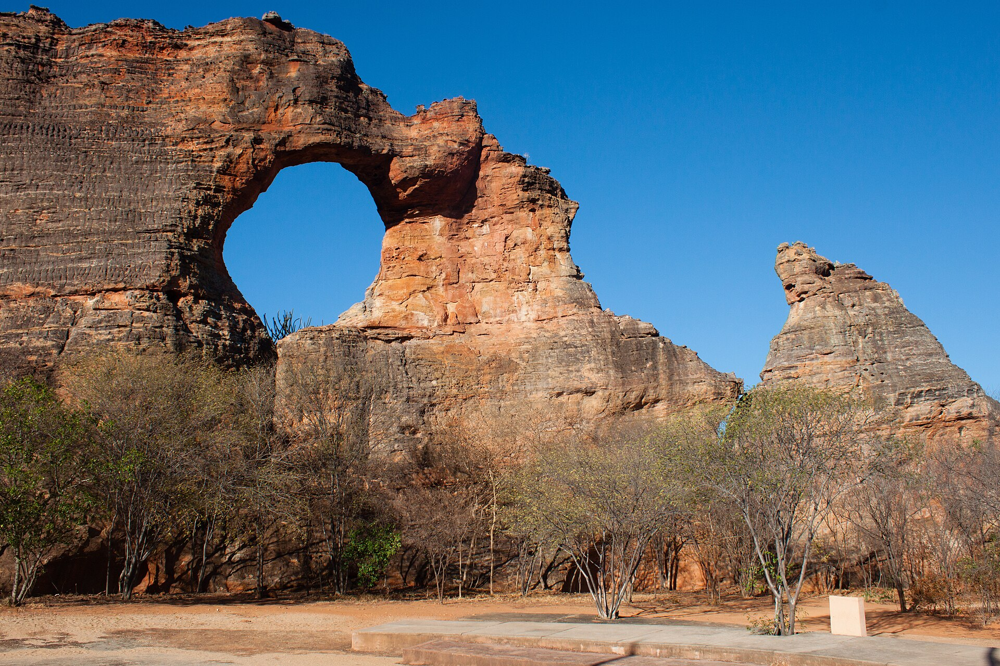
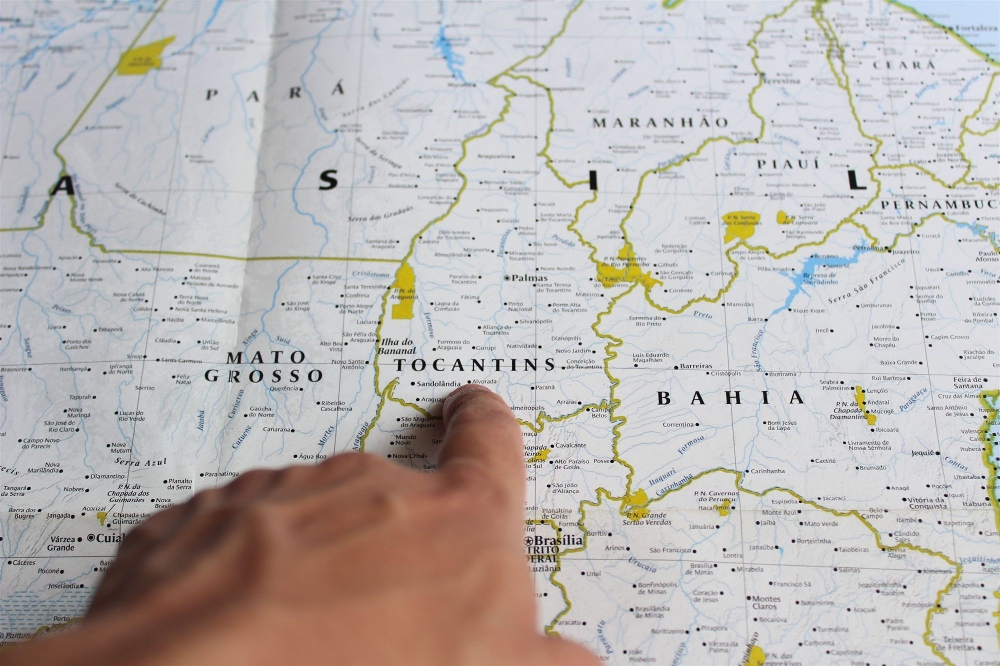
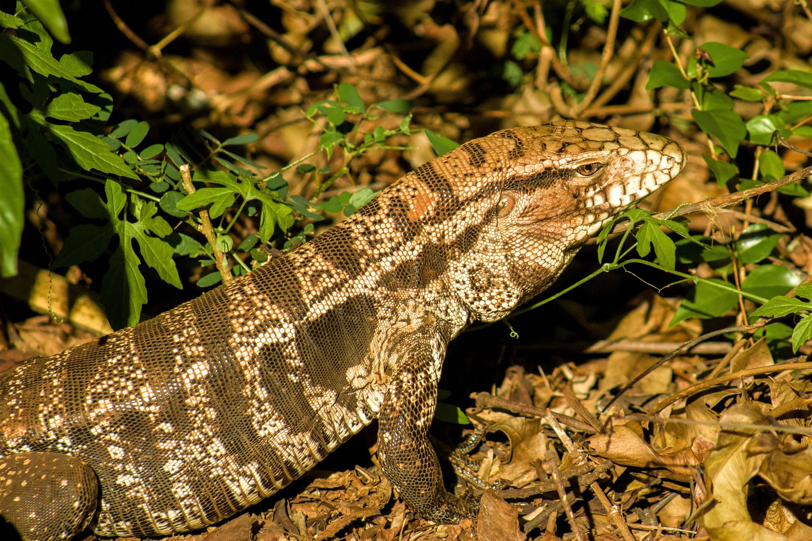
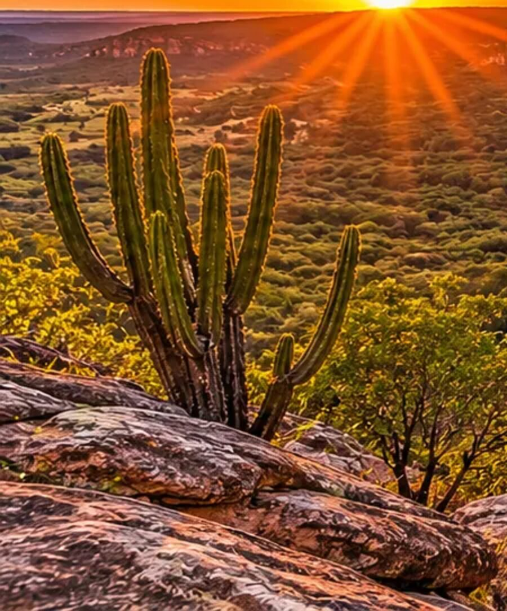

Curiosidades
Arte rupestre, cajuína, carnaúba e outros fatos que fazem do Piauí um lugar único.
Ver curiosidades
O Piauí reúne, no mesmo mapa, o sertão seco, o Cerrado, a Caatinga e um litoral pequeno, mas único. Em poucas centenas de quilômetros a paisagem muda de arenito avermelhado para carnaubais, lagoas e dunas.
O Projeto Piauí apresenta esse território em quatro passos: curiosidades, localização, fauna e uma galeria de imagens.

Arte rupestre, cajuína, carnaúba e outros fatos que fazem do Piauí um lugar único.
Ver curiosidades
Onde fica o estado, como é o clima e como chegar aos principais destinos.
Ver localização
